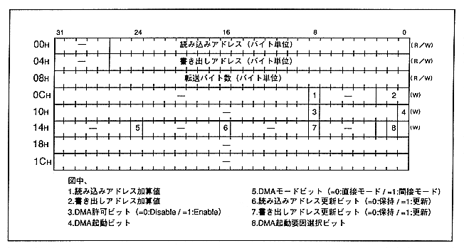

Figure 1.7 shows the map of the level 2-0 DMA set register. This register stores the parameters required for DMA transfer. As shown in the SCU register map (Figure 1.6), there are three types of DMA levels (level 0 to level 2), so the addresses in Figure 1.7 are expressed as relative addresses.
Figure 1.7 Level 2-0 DMA set register map
